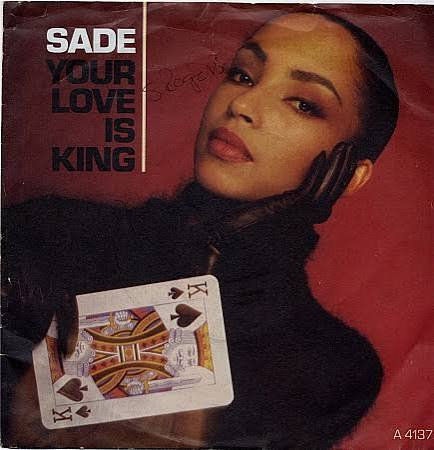

Love Is Stronger Than Pride
1988
Uno de los primeros trabajos de Sophie Muller junto al grupo.
La identidad artística de Sade no se construye únicamente a través de su música. Sus fotografías, portadas y videoclips forman parte de un universo visual caracterizado por la elegancia, la sobriedad y una marcada sensibilidad cinematográfica.


La imagen de Sade Adu se convirtió en una parte fundamental de la identidad del grupo. Su estilo combina sencillez, elegancia y naturalidad, alejándose de las tendencias visuales más llamativas de cada época.
Antes de dedicarse plenamente a la música, Sade estudió diseño de moda en Saint Martin's School of Art, una formación que forma parte de su recorrido artístico.
La directora Sophie Muller tuvo un papel importante en la construcción del universo audiovisual de Sade. Ambas se conocieron durante sus años de formación en Saint Martin's, donde Muller estudiaba diseño gráfico y Sade diseño de moda.
Su colaboración comenzó con el videoclip Love Is Stronger Than Pride, en 1988. A partir de entonces, Muller dirigió numerosos videos musicales del grupo y participó en distintos proyectos visuales vinculados a su trayectoria.
Los videoclips de Sade amplían su identidad artística mediante imágenes que acompañan el clima y las emociones de sus canciones.
1988
Uno de los primeros trabajos de Sophie Muller junto al grupo.
1992
Presenta a Sade como una sirena dentro de una historia visual sobre un amor imposible.
2000
Desarrolla un recorrido visual de carácter onírico, en sintonía con la sensibilidad íntima de la canción.
2001
Construye una atmósfera introspectiva vinculada con las emociones de tristeza y soledad.
Las fotografías, las portadas y los videoclips no funcionan solamente como elementos de promoción. Cada uno contribuye a construir un universo visual propio que complementa y amplía la identidad musical de Sade.